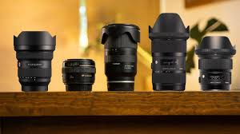

Cámara Profesional
Una cámara DSLR o mirrorless permite controlar todos los parámetros de captura para obtener mejores resultados.

Lentes
Los lentes determinan el estilo de tus fotografías. Los más usados son 50mm, gran angular y teleobjetivo.
